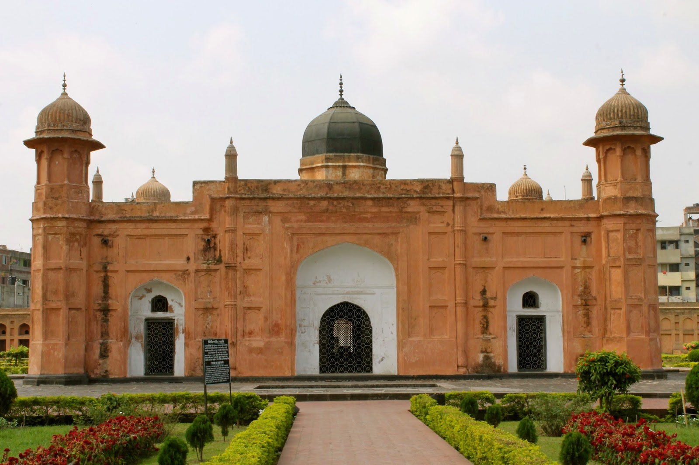
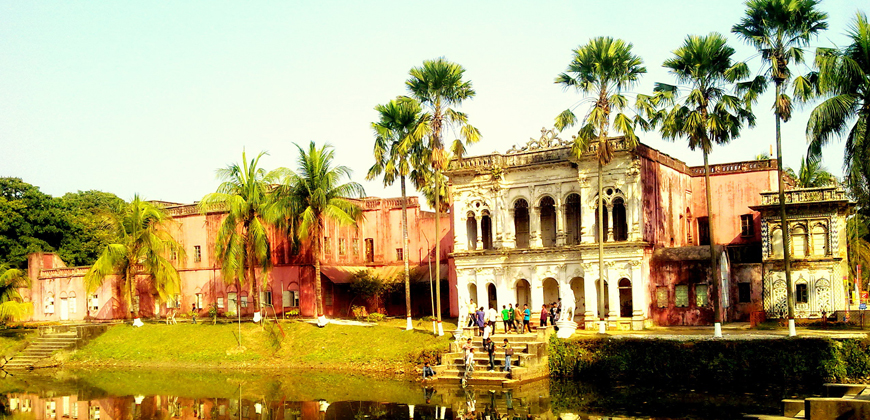
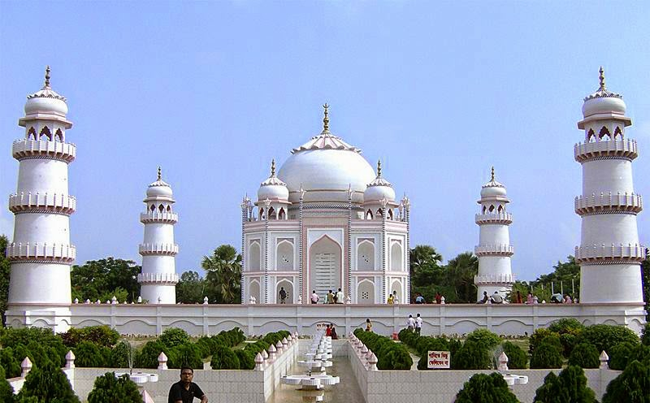
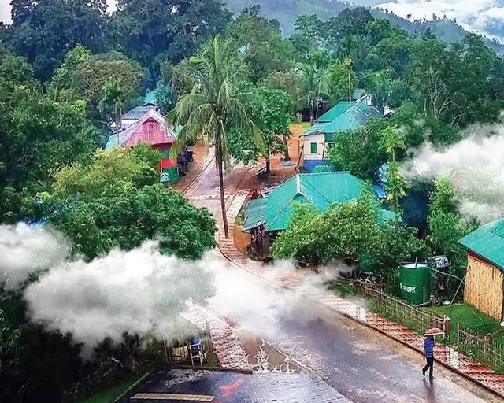

YOU HAVE ARRIVED
LETS EXPLORE!
lets know a bit before travelling
Book your preferable stay
check out what exciting to do
Explore the treat to your eyes!
Mind seeing some pictures?
We are just one call away!

Bangladesh is a land of mystery and intrigue. The country is centuries old and while it has seen many visitors over the years, it is only now starting to experience a commercial tourism boom. In many respects, Bangladesh is a land of opportunity and adventure. All you need do is step out and discover its many mysteries for yourself.
There are so many things to be enjoyed here. Perhaps one of the most popular activities is that of sunning yourself on the exquisite white sandy beaches of Cox's Bazaar and Teknaaf. Both beaches are situated on the eastern coast of the Bay of Bengal and are relatively unspoilt by tourists making them a great place to spend vacation time. Another attraction is the many archaeological sites in the country. They are interesting from a cultural and architectural point of view and can be fascinating to tour. Bangladesh's other attraction is a bit more lively – the Royal Bengal Tigers which have become somewhat of a trademark for the country. These stunning big cats are somewhat protected in the country and are stunning to behold!
Bangladesh is also home to the longest sea beach, the largest tea gardens and some amazing exotic animal life. To top it off, the people of the country are colorful and friendly and have a fascinating culture. There is a lot to do here. You can choose things such as trekking and adventure tours. Most of the activities give you the opportunity to take in the beautiful green mountains, sparkling rivers and clear vistas. The natural wealth of the area is, in many respects, unbeatable. Bangladesh is a paradise just waiting to be discovered!
Bangladesh contains greater biodiversity than that of many countries taken together. Indeed few countries in the world can match its rich and varied flora and fauna which are not only aunique biological phenomenon but are also a great natural resource of the country.
Bangladeshis are historically descendants of various races and nationalities. An Austro-Asian race first inhabited this region followed by Dravidians and Aryans. There was also an influx of the Mongolians from Tibet and Mayanmar. The Arab Muslims started coming here in the early ninth century AD. Persians, Armenians, Turks, Afghans and lastly the Mughals came in quick succession.

Bangladesh has been aptly described as a new state in an ancient land. Much has been written about the past glory of Bangladesh, notably in old records like the evidence of Pliny and Periplus of the Erythrean Sea (first century AD). It was drawn in Ptolemy's map. These indicate that from the earliest times Bangladesh was known to the West, particularly for its Muslin, the finest fabric the world has ever produced. Travellers and scholars who were attracted by the charms and fame of Bangladesh since time immemorial had showered effusive epithets on its bounties and wealth, affluence and prosperity, craftsmanship and cultural advancement.
They include the Chinese travellers Fa-hien (fourth century AD), Hue-an-tsung (seventh century), Ma-hoen and Fei-shin (fifteenth century), Ibne Batuta (fourteenth century) from Africa, Nicola Kanti (fifteenth century) and Ceasar the Frederik (sixteenth century) from Venice, Verthema, an Italian in the sixteenth century, Barbosa and Sebastin Manric (sixteenth century) from Portugal, Travernier and Bernier from France (seventeenth century) and Queen Elizabeth-the First's ambassador Ralf Fish.
To Ibne Batuta, Bangladesh was a 'hell full of bounties and wealthiest and cheapest land of the world.' So great were the attractions of Bangladesh that to quote Bernier 'it has a hundred gates open for entrance but not one for departure.' Ladies of Imperial Rome were literally crazy for Bangladesh's Muslin and luxury items, which according to Pliny, resulted in serious drain of gold of the Empire. Because of its location, Bangladesh served as a flourishing entry port and intermediary in trade and commerce between South Asia and the Far East. The region also played a seminal role in disseminating its belief art and architecture in the wider world of Asia. Ancient Bangladesh took great pride as a coveted seat of learning and education and scholars from far away countries regularly flocked to its numerous universities and monasteries.

Etymologically, the word Bangladesh is derived from the cognate Vanga which was first mentioned in Aitarey Aranyaka, a Hindu scripture composed between 500 BC and 500 AD. Literally it means a wetland. Muslim merchants of Arab origin used to refer it as Bangalah from which its present nomenclature is believed to have gradually evolved.
Geological evidence indicates that much of Bangladesh was formed 1 to 6.5 million years ago during the tertiary era. Human habitation in this region, therefore, is likely to be very old with the evidence of Palaeolithic civilization dating back to about 1,00,000 years.
Long colonial exploitation has largely denuded Bangladesh of its past affluence and wealth. Independence has, however, opened new vistas of prospects and opportunities. In the final analysis, Bangladesh is a land made splendid by natural grace - a veritable mosaic in green, verdant and boisterous, with its dedicated and creative people adding color and vibrancy to it.

The valley is 2000 feet above sea level. Sajek valley is known as the Queen of Hills & Roof of Rangamati. The name of Sajek Valley came from Sajek River that originates from Karnafuli river. Sajek river is working as a border between Bangladesh and India. Sajek valley resorts are made on the side of the hill to provide the unique experience of tribal lifestyle.
Sajek valley is famous for its natural beauty. The valley is surrounded by mountains, dense forest, grasslands hilly tracks. Many small rivers flow through the mountains among which Kachalong and Machalong are notable. On the way to Sajek valley, one has to cross the Mayni range and Mayni river. The road to Sajek has high picks and falls. The native people of Sajek valley are ethnic minorities. Among them Chakma, Marma, Tripura, Pankua, Lushai and Sagma are mentionable. Women seem to be more involved in economic activities here. Tea stalls, food joints and roadside marketplaces are dominated by women. People in general are gentle, welcoming and friendly. Picking fruits and vegetables early in the morning is a major trade here. They are not fluent in Bengali but the young population speak English confidently.
Beauty of Bangladesh lies in the simplicity. The Bangladeshi are one of the simplest nations in terms of lifestyle. Amidst all the difficulties, poverty, struggles, people here know to keep their life simple and fill their heart content with smile on the faces. Beauty of Bangladesh lies in the Bangladeshi's sacrificing attitude, struggling mentality and in the ability to adapt. The majority of the Bangladeshi cannot live a cozy life, live hand to mouth, still they are happy because they live in the midst of a serene green nature far from the madding crowd of the capital.